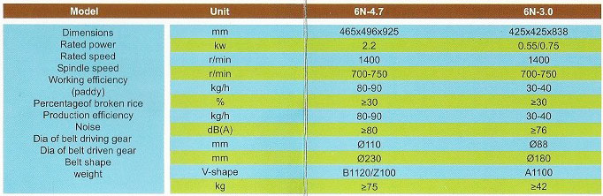

Farming is the backbone of most countries in the world in including India. Technological advancements in agriculture has made farming a big industry. India is the world's second largest producer of rice after China. Improvements in the milling procedure of rice will highly benefit the farmer and the agricultural industry.
We Navaka India an associate company of Gutta Engineers Pvt. Ltd. Kolkata understand the needs of the farmers. This wonderful machine has been introduced keeping the farmers in mind. This rice mill is a compact mechanical product newly developed and launched for the easy usage of every farmer. This rice mill is not only efficient but also environment friendly. It is a compact and efficient version of the traditional rice mill. The rice mill is available in two variants and is named SN-4.7 and SN-3.0.The SN-4.7 is an automatic version with a more powerful motor whereas the SN-3.0 is a self-sufficient economical version.

Features :
The product is a substitute (or the big rice mill. It is not only compact but also portable and more cost efficient. It is simple to operate and no expertise is need for it. The milling can be done by simply pulling the feeding gate and turning the adjusting knob. The paddy is milled to polished rice, and the chaff is separated automatically. The hexagonal rice sieves and polishes the paddy or the brown rice by the process of mutual friction. The separated chaff can be used as fodder for cattle. The rice milled by this process is healthier as the nutrient content of the rice is preserved, as the Huller blade is not used.
We have more products for agriculture and allied applications. Visit our website for the full range and details.
The Importance of Rice Milling :
Milling is a crucial step in the post production of rice. The basic objective of rice milling is to separate the husk and the bran, the end product being the white groins of rice.
What Rice Milling gives :
Most rice varieties are composed of approximately 20% rice husk 11% bran layers and 60% starchy endosperm also referred to as Total Milled Rice. In an ideal milling process this would result in the following fractions: 20%husk, 8-12% bran {depending on the milling degree) and 68-72% milled rice or white rice depending on the variety. The total milled rice contains whole grains or head-rice and broken. The byproducts in rice milling are rice husk, rice germ, bran layers and fine broken.
PRODUCT CHARECTERISTICS